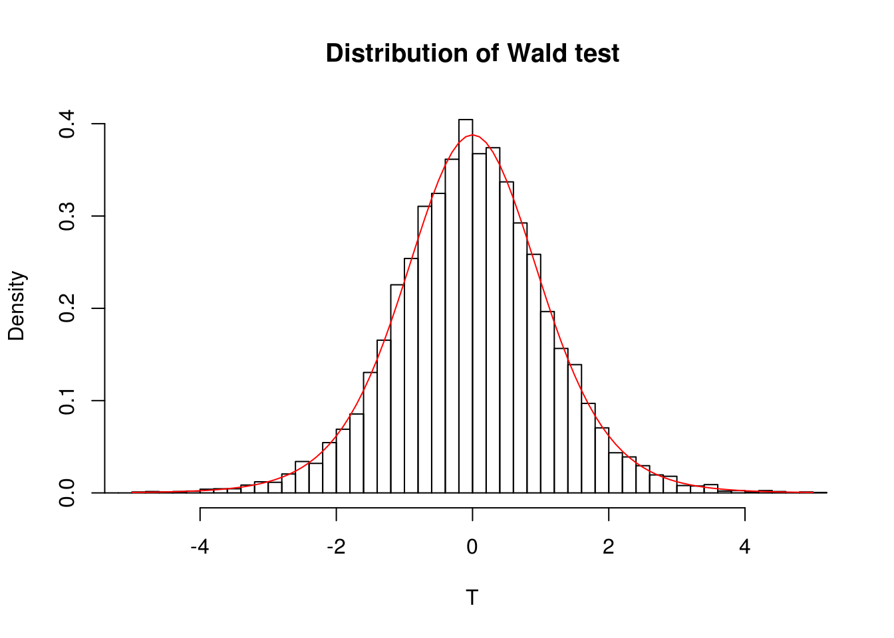
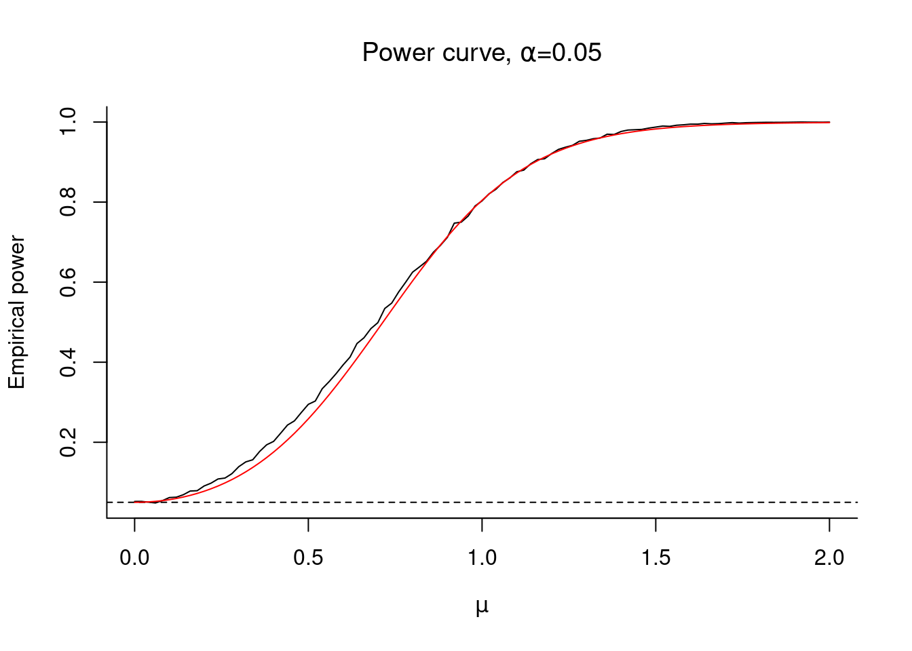
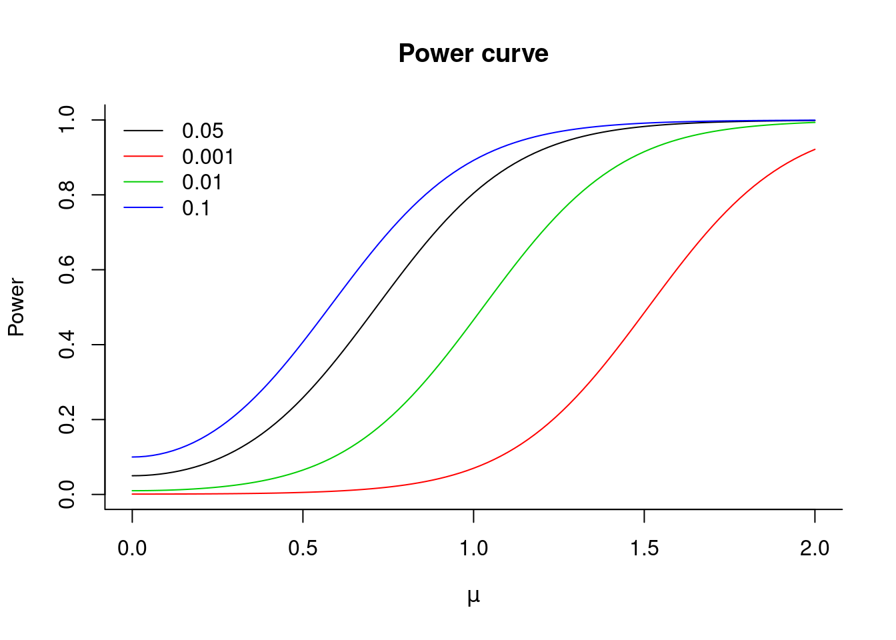

6 Hypothesis testing
This is a refresher on the notions related to hypothesis testing.
Trial analogy: suppose you are a member of the jury for a trial where the potential culprit stands accused of murder. If you declare him guilty, the sentence will likely be death penalty. The null hypothesis is innocence: the accusee is innocent until proven guilty. You will deliver a verdict of culpability only if the evidences are overwhelming against the accusee (you do not want to send an innocent to the death row and make a wrongful conviction).
In this setting, the verdict at the end of the trial will reflect “this innocent until proven guilty” mindset: you can usually only conclude that there are not enough proofs to sentence the accusee of murder, not that the person is innocent. This is why we “fail to reject the null hypothesis”, since you gave the accusee the benefit of the doubt in the first place and examined the evidence in this optic.
Test statistics are realizations of random variables, so the size of a test is the probability of falsely rejecting the null hypothesis, \[\alpha = \Pr(\text{reject }\mathrm{H}_0 \mid \mathrm{H}_0 \text{ is true}).\]This is fixed beforehand: if we take \(\alpha = 0.05\), there will be 95% of the cases we will correctly release an innocent and 5% of the cases where we will convict him undully (due to circumstancial factors, for example).
We illustrate various concepts with the simple model \[Y_i = \beta_0 + \varepsilon_i, \qquad\varepsilon_i \stackrel{\mathrm{iid}}{\sim} \mathcal{N}(0, \sigma^2) \qquad (i=1, \ldots, n)\]
The Wald test statistic for the null hypothesis \(\mathrm{H}_0: \beta_0=0\) against the alternative \(\mathrm{H}_a: \beta_0 \neq 0\) is \(t = \hat{\beta}_0/\mathrm{se}(\hat{\beta}_0) \sim \mathcal{T}(n-p)\). We can compare the Student distribution with the empirical distribution of \(t\)-test obtained by simulating a large number of test statistics from the model; these should match.
test <- rep(0, 10000L)
n <- 10L
#Simulate Normal samples, compute t-test stat
for(i in 1:length(test)){
y <- rnorm(n)
test[i] <- mean(y) / (sd(y)/sqrt(n))
}
#Create histogram, superimpose density of T(n-1)
hist(test, breaks = 50, probability = TRUE,
main = "Distribution of Wald test", xlab = "T",
xlim = c(-5, 5))
curve(dt(x, df = n - 1), col = 2, add = TRUE,
from = -5, to = 5)
If the value \(|t|\) is very large, then there are evidences that \(\beta_0 \neq 0\). In this case, the probability of observing something larger than \(|t|\) under \(T \sim \mathcal{T}(n-p)\) is \(P = 1-\Pr(-t < T < t) = 1-2 \Pr(|T| < t)\), by virtue of the symmetry of the Student distribution. This probability \(P\) is called \(P\)-value, the probability of observing something as extreme under the null distribution.
The power of a test is \[\mathrm{power} = \Pr(\text{reject } \mathrm{H}_0 \mid \mathrm{H}_a \text{ is true}).\] Consider the alternative \(\mathrm{H}_a: \beta = \mu \neq 0\). For the \(t\)-test, the power is a function of \(\mu, \sigma^2\) and \(n\). Intuitively, the further \(\mu\) is from zero, the larger the chance of correctly detecting that \(\mu \neq 0\). Similarly, the more precise our mean estimate is (when \(\sigma^2\) is small), the more we have. Lastly, evidence accumulates with the sample size - here through the degrees of freedom parameter.
Even if we don’t know the distribution of the test statistic under the alternative, we can simulate the power curve as a function of \(\mu, \sigma\) and \(n\).
n <- 10L
nrep <- 10000L
mu <- seq(0, 2, length = 101)
store <- matrix(0, nrow = length(mu), ncol = nrep)
for(i in 1:length(mu)){
for(j in 1:nrep){
# Simulate y = mu + eps, eps ~ N(0,1)
y <- rnorm(n, mean = mu[i])
tstat <- mean(y) / (sd(y)/sqrt(n))
# Compute P-value, i.e., probability Pr(|T| > t)
pval <- 2*(1 - pt(abs(tstat), df = n - 1))
store[i, j] <- pval
}
}
# Compute the proportion of time where p-value is below zero.
plot(mu, rowSums(store < 0.05)/nrep,
type = "l", xlab = expression(mu),
ylab = "Empirical power", bty = "l",
main = expression(paste("Power curve, ", alpha, "=0.05")))
#size of test
abline(h = 0.05, lty = 2)
#theoretical power - derivation follows
tquant <- qt(0.975, df = n - 1)
pow <- 1 - (pt(tquant + mu*sqrt(n), df = n - 1) -
pt(-tquant + mu*sqrt(n), df = n - 1))
lines(mu, pow, col = 2)
Under \(\mathrm{H}_0\), our test statistic \(T=\hat{\beta}_0/\mathrm{se}(\hat{\beta}_0)\) followed a \(\mathcal{T}(n-1)\) distribution and the cutoff value was \(\mathfrak{t}_{1-\alpha/2}\), so that under \(\mathrm{H}_0\), \(\Pr(|T| > \mathfrak{t}_{1-\alpha/2}) = \alpha\).
We can compute the power exactly as a function of \(\mu\) in this example: it is \[\begin{align*} \beta(\mu) &= 1-\Pr\left(\mathfrak{t}_{1-\alpha/2} \leq T \leq \mathfrak{t}_{1-\alpha/2}; {\mathrm{H}_a}\right) \\&=1-\Pr\left(\mathfrak{t}_{1-\alpha/2} \leq \frac{\hat{\beta}_0-\mu+\mu}{\mathrm{se}(\hat{\beta}_0)} \leq \mathfrak{t}_{1-\alpha/2}; {\mathrm{H}_a}\right) \\&=1-\Pr\left(\mathfrak{t}_{1-\alpha/2}+\frac{\mu}{\mathrm{se}(\hat{\beta}_0)} \leq \frac{\hat{\beta}_0-\mu}{\mathrm{se}(\hat{\beta}_0)} \leq \mathfrak{t}_{1-\alpha/2}+\frac{\mu}{\mathrm{se}(\hat{\beta}_0)};{\mathrm{H}_a}\right). \end{align*}\]
since now \(T^*=(\hat{\beta}_0-\mu)/\mathrm{se}(\hat{\beta}_0) \sim \mathcal{T}(n-1)\) under \(\mathrm{H}_a\). If we superimpose this curve as a function of \(\mu\), we see it matches the empirical power.
The power curve at \(\mu=0\) is 0.05, since the size of the test is \(\alpha= 0.05\) in this experiment. If we increase the size of the test, then power increases:
The probability of Type I error (falsely rejecting the null) is the size of the test, so increases with \(\alpha\). The lower the \(\alpha\), the higher the probability of Type 2 errors (not rejecting the null when the alternative is true) and the lower the power.
plot(mu, pow,
type = "l", xlab = expression(mu),
ylab = "Power",
ylim = c(0, 1), bty = "l",
main = "Power curve")
alphav <- c(0.05, 0.001, 0.01, 0.1)
for(alpha_ind in 2:4){
alpha <- alphav[alpha_ind]
tquant <- qt(1-alpha/2, df = n - 1)
pow <- 1 - (pt(tquant + mu*sqrt(n), df = n - 1) -
pt(-tquant + mu*sqrt(n), df = n - 1))
lines(mu, pow, col = alpha_ind)
}
legend(x = "topleft", legend = alphav ,col = 1:4, bty = "n", lty = rep(1,4))